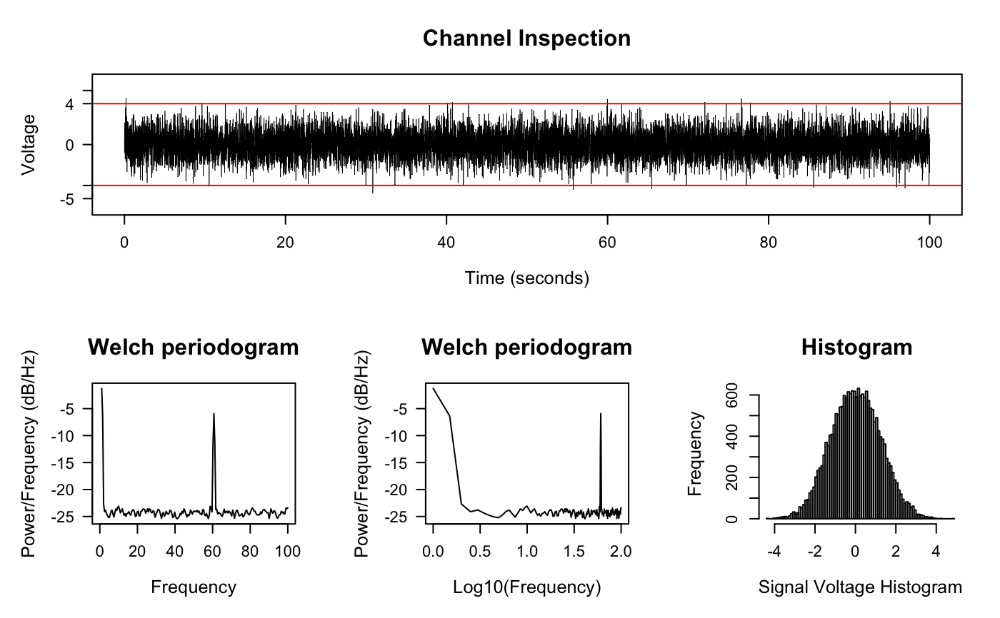
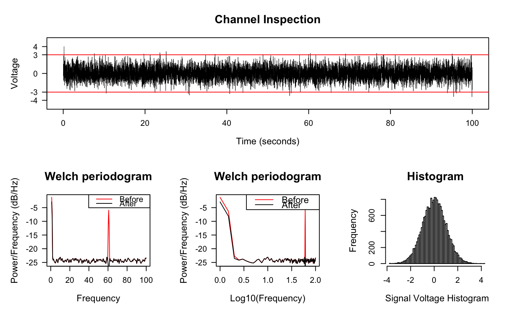

diagnose_signal.RdPlot and Inspect Signals in Trace, Periodogram, and Histogram
diagnose_signal( s1, s2 = NULL, sc = NULL, srate, name = "", try_compress = TRUE, max_freq = 300, window = ceiling(srate * 2), noverlap = window/2, std = 3, cex = 1.5, lwd = 0.5, flim = NULL, nclass = 100, main = "Channel Inspection", col = c("black", "red"), which = NULL, start_time = 0, boundary = NULL, mar = c(5.2, 5.1, 4.1, 2.1), ... )
| s1 | Signal for inspection |
|---|---|
| s2 | Signal to compare, default NULL |
| sc | compressed signal to speedup the trace plot, if not provided, then
either the original |
| srate | Sample rate of s1, note that |
| name | Analysis name, for e.g. "CAR", "Notch", etc. |
| try_compress | If length of |
| max_freq | Max frequency to plot, should be no larger than half of the sampling rate. |
| window | Window length to draw the Periodogram |
| noverlap | Number of data points that each adjacent windows overlap |
| std | Error bar (red line) be drawn at standard deviations, by default is 3, meaning the error bars represent 3 standard deviations. |
| cex, lwd, mar, ... | passed to |
| flim |
|
| nclass | Number of classes for histogram |
| main | Plot title |
| col | Color for two signals, length of 2. |
| which | Which sub-plot to plot |
| start_time | When does signal starts |
| boundary | Boundary for signal plot, default is 1 standard deviation |
library(stats) time <- seq(0, 100, by = 1/200) s2 <- sin(2 * pi * 60 * time) + rnorm(length(time)) diagnose_signal(s2, srate = 200)#> $ylim #> [1] 4.859044 #> #> $boundary #> [1] 3.675596 #>#> $ylim #> [1] 4.294848 #> #> $boundary #> [1] 2.983221 #>